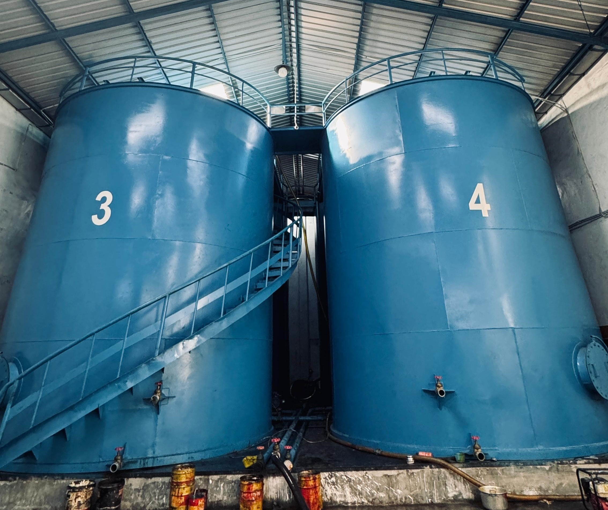

Tentang Kami
PT. Samudera Berkah Sentosa hadir menjadi solusi untuk memenuhi kebutuhan bahan baku yang berkualitas dan konsisten, Dengan komitmen terhadap kualitas tanpa kompromi, Dan pengiriman barang yang tepat waktu. kami siap menjadi mitra strategis yang mendukung pertumbuhan industri feedmill di indonesia.
PT. Samudera Berkah Sentosa adalah perusahaan yang berdedikasi tinggi dalam menyediakan beragam bahan baku berkualitas tinggi untuk memenuhi kebutuhan industri peternakan yang terus berkembang. Berbekal pemahaman tentang produk dan pengalaman yang mendalam tentang nutrisi, kami berkomitmen untuk menghadirkan solusi untuk memenuhi kebutuhan bahan baku yang berkualitas tinggi.